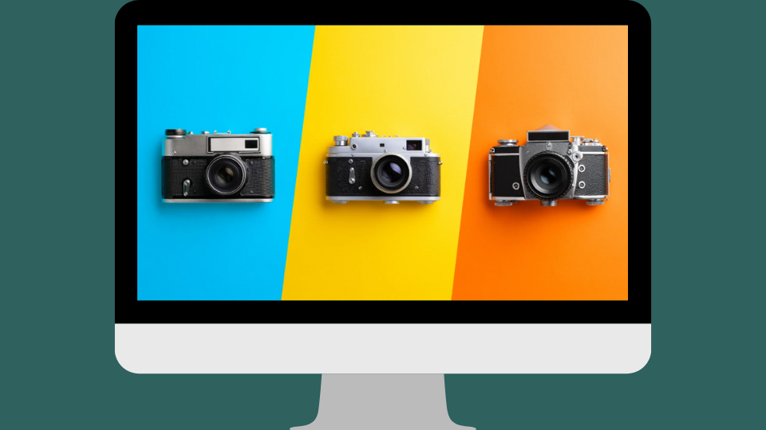
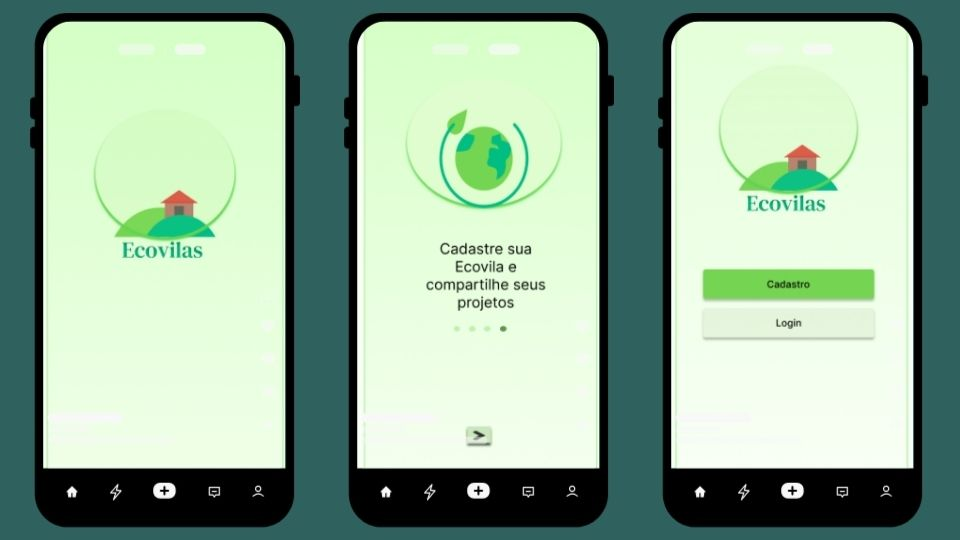

Desenvolvedora Full Stack em formação pelo SENAC, com experiência prática prévia em desenvolvimento de software para pesquisa na UNESP. Atuei na criação de APIs REST e estruturação de back-ends com Java e Spring Boot. Uno conhecimentos técnicos em arquitetura MVC e banco de dados com princípios de UX/UI, buscando sempre entregar soluções digitais eficientes, funcionais e focadas na melhor experiência para o usuário.
Inovação na concepção de interfaces e soluções visuais funcionais.
Busca constante pelo aprendizado de novas tecnologias e aprofundamento técnico.
Análise aprofundada de requisitos, usabilidade e arquitetura de sistemas.
Facilidade para estruturar algoritmos, fluxos e resolução de problemas.

Este projeto é um website desenvolvido especialmente para fotógrafos que desejam apresentar seus trabalhos de forma profissional e impactante. Meu objetivo foi criar uma plataforma visualmente atraente e intuitiva, permitindo que artistas visuais mostrem sua visão única ao público.

Ecovilas é um aplicativo desenvolvido como trabalho de conclusão do curso de UX/UI Design. O projeto tem como objetivo mapear ecovilas em diferentes regiões, facilitando o acesso a informações sobre comunidades sustentáveis e promovendo uma conexão mais próxima com seus eventos e iniciativas.
Saiba MaisEste projeto consiste na criação de um website dedicado a escritoras, proporcionando uma plataforma para compartilhar suas obras. O objetivo foi criar um espaço visualmente atraente e funcional, que destaca a identidade literária de cada autora.
Saiba MaisAtuação como bolsista UNESP em Desenvolvimento de Software para o Centro de Pesquisa e Psicologia Aplicada (CPPA) da Universidade Estadual Paulista “Júlio de Mesquita Filho” – UNESP, Câmpus de Assis. Foco em desenvolvimento Back-end e Front-end, além da elaboração de documentos voltados a requisitos funcionais e não funcionais.
Plataforma inovadora voltada a conectar viajantes com ecovilas, retiros de bem-estar e eco-lodges no Brasil. Selecionado e destaque na semifinal do programa Empreenda Senac.